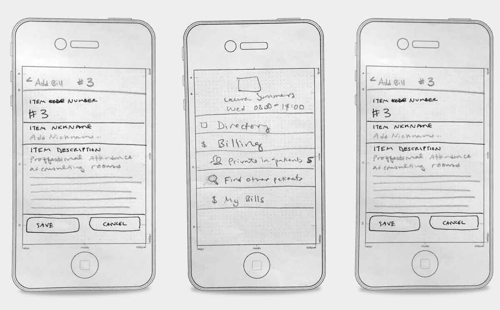
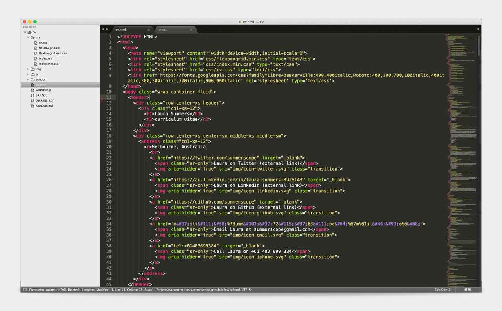

User experience designer & front-end developer. Advocates for user needs, generally opinionated, likes to validate opinions whenever possible. Works with startups to build meaningful tools.


I work across UX, UI, and FED skill sets.
What does that look like?
Sometimes this...

Or this...

Or this...

(Sometimes all three in the same day!)
Work history
-
Product designer & front-end developer for med-tech startup, Medtasker, a platform for mobile and web task management in hospitals. Worked across several aspects of the business, and led the design effort for the marketing site, the explainer video, the help & documentation site, as well as the actual product design.
During the design phase, conducted ethnographic research and user interviews to better understand the hospital technology landscape. During product trial, performed training and support services for the ward staff, and improved UX iteratively based on user feedback. Design focus on optimising usability for first-time or naive users, while still supporting power-users.
-
Working across design and front-end development skill sets for a gamut of different client projects across digital and creative environments. As a sole-trader working in consultation with small or medium sized businesses, the my work is often pinpointing and focusing on the design or UX work which will add the most value for the business and end-users alike.
Selected companies:
- Open Food Network
- Silverpond
- Collabforge
- Kinfolk
- Rate my Agent
-
Lead creative designer in a small digital team producing content for a variety of web platforms including desktop and microsites, responsive & mobile sites, video / motion graphics, eDMs, flash, marketing campaigns.
Responsibilities include internal design reviews and brainstorming with the team, overseeing junior team members, and producing creative concepts, front-end comps and mark-up for HTML, CSS and some javascript. Worked with multiple CMS platforms, including Umbraco, Drupal and SilverStripe.
Key internal achievements include:
- Working with studio owners to improve and refine tender response documents
- Upgrading studio processes including implementation of time management software, SVN for working directories
- Improving and collaborating heavily in the rewrite of key client-facing documentation including the initial stakeholder survey / design brief
- Redesigning and managing the agency's Request for Proposal document with a view to minimising hours
- Collaborating with the developers to produce a thorough, robust QA checklist for our mark-up and CMS implementation
Key brands include:
- NGS Super
- SunSuper
- CBUS
- Energy Super
- HSBC
- Industry SuperFunds
-
Designer & front-end developer working in a small in-house team performing overflow work for digital agencies. Artisan Creative was conceived as a value-add service within the context of a larger recruitment business (specialising in the creative and digital space).
Work performed included motion graphics, print design, interaction design and development for websites, maintaining existing sites, flash banners, and eDMs. Digital outputs were supplied as 'white label' to larger digital agencies to be rebadged as necessary.
-
Junior web designer working in a small team to produce websites and digital marketing collateral for a number of retail, fashion and foodie brands. Work produced included motion graphics, TVCs, eDM design and mark-up, website development and maintenance for e-commerce and marketing sites.
Key brands include:
- Habitat for Humanity
- Ferrari, Maserati, Fiat, Citroen, Alfa Romeo, Lotus, Vespa, Ducati
- Care Australia
- Gripp Jeans
- Taking Shape 14+
-
Graphic design and print product for ads going to press in the Yellow Pages. Role required strict adherence to rules and regulations for print, as well as creative problem solving for how to best promote the brand message with strict space and design constraints.
-
Role began as software QA tester and evolved into multiple areas including software support, software documentation (help) writer. Later also took on aspects of interface design for the software systems including software icon design and splash screen design. This role piqued my interest in GUI design and drove home the distinction between back-end functionality and the user's perception of what the software can do, and that the onus is on design to communicate the functionality of the system in order to be successful.
Skills, frameworks and SDKs.
Key capabilities
- User-research interviews
- Research-driven personas
- User flows
- IA and wireframing
- User-centred interaction design
- Creative & graphic design
- Front-end development
- Web-based applications
- Responsive & mobile-first development
- Touch screen interfaces
- Motion graphics / video production
Experience across
- Wireframing (Balsamiq, inVision App)
- Design tools (Photoshop, Illustrator)
- Video production (Premier, After Effects, Audition)
- Bootstrap
- Foundation Zurb
- SASS / Postprocessors
- Ionic framework
- Angular.js
- jQuery
- Gulp
- Git (CLI)
I love learning and have worked with lots of different teams, tools and development stacks. Happy to tell you more - just ask me about your area of interest!
Education
-
An on-going degree ;) One which I attempt to enrich with multiple resources including podcasts, industry blogs, most of the catalogue from A Book Apart, meet-ups and industry conferences. Conference highlights include OSCON 2016, Web Directions events, CSS Conf 2015, and An Event Apart (SF) 2010.
-
A multimedia degree which focused on getting students grounded in the technical aspects of design for screen. Graduated in June 2007 with an HD (High Distinction) average.
-
A broad liberal arts education which gave me a baseline for further learning and tought me analytical thinking and problem solving skills. I majored in English, with a concentration in Performing Arts. Graduated with a 3.6 Cumulative G.P.A. & Dean's List.
Other stuff I do.
Diversity
Passionate supporter and advocate for improving diversity in technology and ensuring our workplaces are welcoming and inclusive. Participating in events like Code like a girl, and Go Girl, Go For IT.
Radio/Podcast
Frequent co-host on Byte Into It: Computer news, tech talk and opinionated chat, hosted on community-run radio station RRR. Running interviews with interesting characters from the industry, and sniffing out cool tech news to share.
Talk
Sharing knowledge, advocating for best practice, and crafting my public speaking skills at meetups and confs, like MelbCSS, Be Responsive, and Decompress.
Volunteer
Providing design and consulting expertise for not-for-profits whose values align with my own. Currently working with Project Panoptes, previously with Kinfolk cafe.
References.
Provided upon request